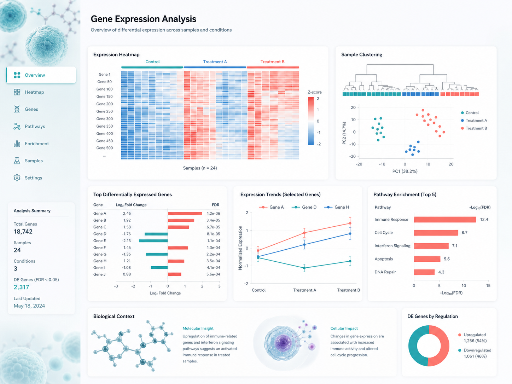
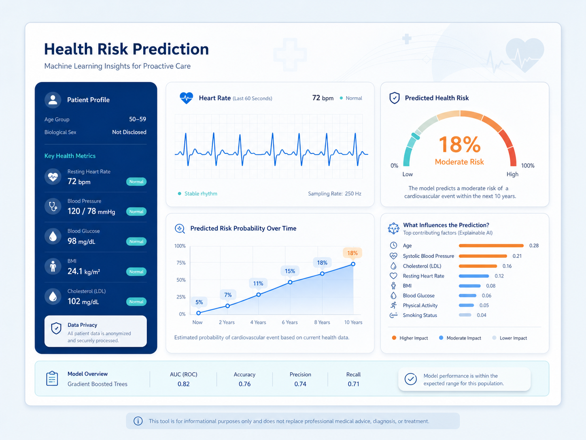
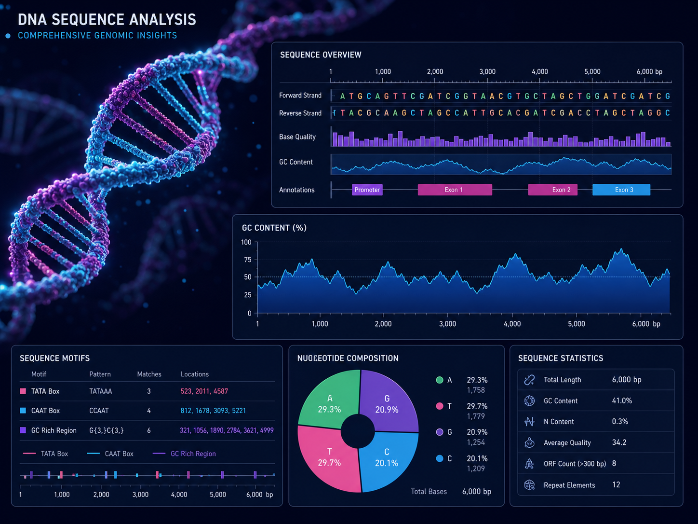

HTML
Experienced
Hello, I'm
Data Scientist • Bioinformatics • Web Developer
Data Scientist using analytics, biology, and software to solve meaningful problems.


Get TO Know More

1 Year Industrial Experience

B.Sc. Chemistry
Data Science & Bioinformatics
I am a Data Scientist with a foundation in chemistry and a strong interest in bioinformatics. I use data analysis, visualization, and machine learning to uncover patterns, answer research questions, and communicate findings clearly.
I also bring one year of industry research experience from SciGenom Labs, where I worked on fluorescence-based assay development and monoclonal antibody characterization. My web-development skills allow me to take scientific insights beyond notebooks and turn them into responsive dashboards and practical digital tools.
Explore My
Industrial Experience
Aug 2024 – May 2025
Project: Assay Development to Measure the Hydrophobicity of Antibodies Using a Fluorescent Dye
Experienced
Intermediate
Basic
Intermediate
Basics
Experienced
Intermediate
Intermediate
Intermediate
Learning
Explore My

An interactive dashboard for exploring gene-expression or public-health data through filters, charts, and clear statistical summaries.
Python • Pandas • Plotly • Web Development

A machine-learning project that explains health-risk predictions with an accessible web interface and responsible model evaluation.
Python • Scikit-learn • HTML • CSS

A browser-based tool for sequence input, GC-content calculation, motif search, and easy-to-read biological visualizations.
JavaScript • Bioinformatics • Data Visualization
Get in Touch